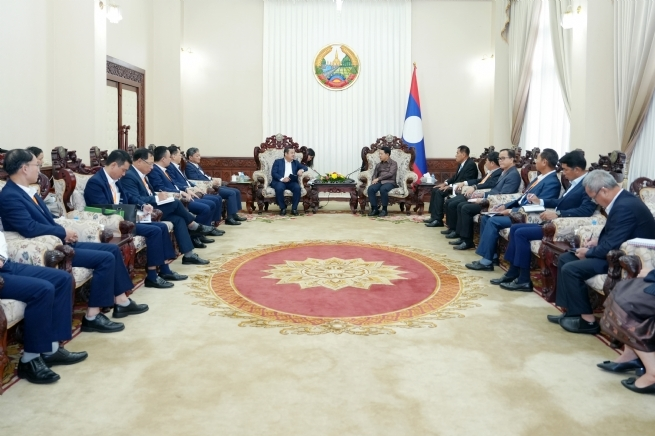

Lao Committed to Supporting Vinanchem in Implementing the Potash Salt Project
On May 27, 2025, at the Office of the Prime Minister of the Lao PDR, the working delegation of the Vietnam Chemical Group led by Mr. Phung Quang Hiep - Chairman of the Board of Members of the Group and Mr. Nguyen Huu Tu - General Director of the Group met and reported to the Deputy Prime Minister of the Lao Government Saleumxay Kommasith and a number of relevant ministries and branches on the progress of the implementation of the Potash Salt Mining and Processing Project in Khammouan province.
At the meeting, Mr. Phung Quang Hiep, representing the Vietnam Chemical Group, reported on the overall implementation of the Project, including the contents of site clearance, infrastructure preparation, equipment reception, personnel organization and additional capital for the project implementation. At the same time, the Group also proposed that the Lao Government pay attention and direct relevant ministries and branches to coordinate in resolving some remaining procedures, creating conditions to accelerate progress, ensuring implementation according to plan. Lao Deputy Prime Minister Saleumxay Kommasith acknowledged and highly appreciated the role of the Potash Salt Project - one of the key cooperation projects between the two countries. The successful implementation of the Project not only brings economic efficiency but also has special political and diplomatic significance, contributing to further tightening the great friendship between the two countries.
The Deputy Prime Minister affirmed that the Lao Government pays special attention to the Project and will continue to create the most favorable conditions for Vinachem to effectively implement it. Based on the Group's report and recommendations, the Deputy Prime Minister gave specific instructions and assigned the Laos - Vietnam Cooperation Committee, the Ministry of Planning and Investment, the Ministry of Energy and Mines, the Ministry of Natural Resources and Environment, and the Lao Ministry of Labor and Welfare to actively coordinate and support the resolution of issues under their authority.
Mr. Saleumxay Kommasith also expressed his hope that the Vietnam Chemical Group, with the highest political determination, will effectively implement the Project and be worthy of the attention and direction from the senior leaders of Vietnam and Laos.

Within the framework of the working session, with the highest political determination, the Chairman of the Board of Members of the Vietnam Chemical Group affirmed the viewpoint of "only discussing, not retreating", "not saying no, not saying difficult". This is a commitment that clearly demonstrates the Group's proactive and determined spirit in organizing the implementation of the Project on schedule, ensuring quality and efficiency, meeting the expectations and close direction from the senior leaders of the two countries.
Vietnam Chemical Group would like to express its gratitude for the Lao Government's attention and close guidance on the Project as well as the timely and specific instructions of Deputy Prime Minister Saleumxay Kommasith to accelerate the implementation progress. The Group is committed to mobilizing maximum resources, promoting a high sense of responsibility and political determination to successfully implement the Potassium Salt Project - a particularly important political task of the Group in the new period.
Immediately after the meeting with the Deputy Prime Minister, the working delegation reported to the Embassy of the Socialist Republic of Vietnam in Laos on the progress of the Project. Ambassador Nguyen Minh Tam expressed his support and affirmed that the Embassy will continue to accompany and support Vietnam Chemical Group in promoting investment cooperation in Laos in general and the Potassium Salt Project in particular.
The potassium salt mine project has a total investment of 522 million USD, with a licensed area of 10km². Vinachem has invested 100 million USD, which is considered a large-scale investment project in Laos.
The project was started in 2015 but had to be suspended in 2017 to seek opinions from competent authorities on exploitation. Up to now, after 8 years of suspension, the Politburo has given opinions and approved the continued implementation of the potassium salt mine project, as a basis for Vinachem to implement this project.
The potassium salt mine project is recorded in the cooperation agreement between the governments of Vietnam and Laos — a particularly important project, providing potassium fertilizer for Vietnam to replace imported goods (currently having to import 100%).
The products of this factory will serve fertilizer production. The project's phase 1 capacity is expected to be more than 250,000 tons of potassium per year, while the actual demand of the domestic market is from 900,000 – 1,000,000 tons of potassium per year. The rock salt processing plant is expected to go into commercial operation in July 2027 and is expected to bring great economic value, providing jobs and income for local people.